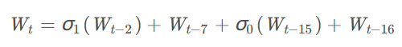
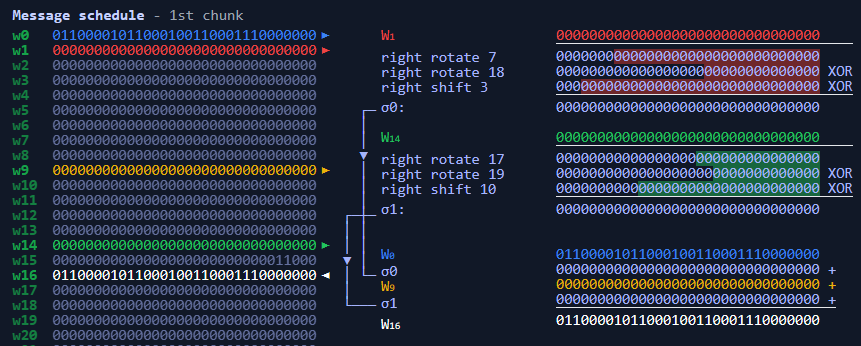
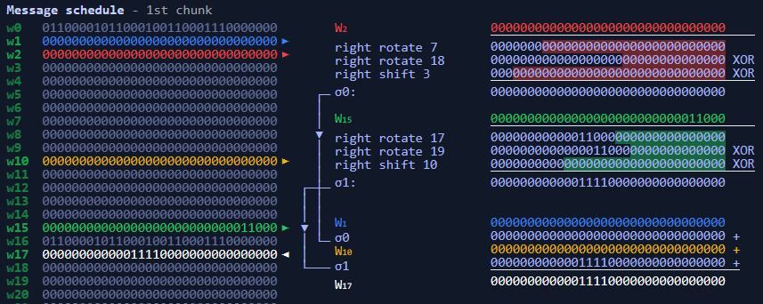
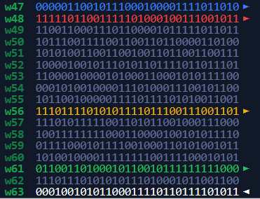
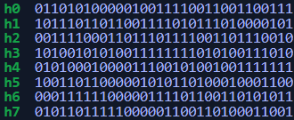
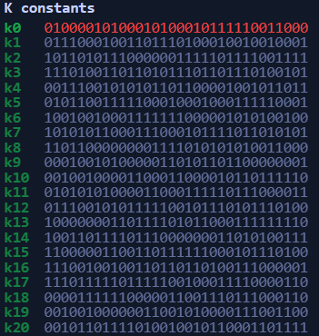
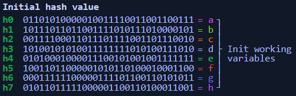
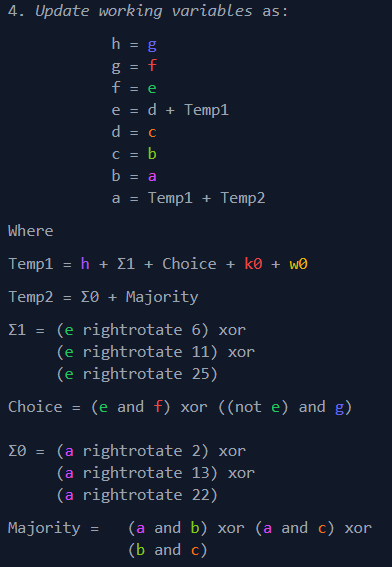
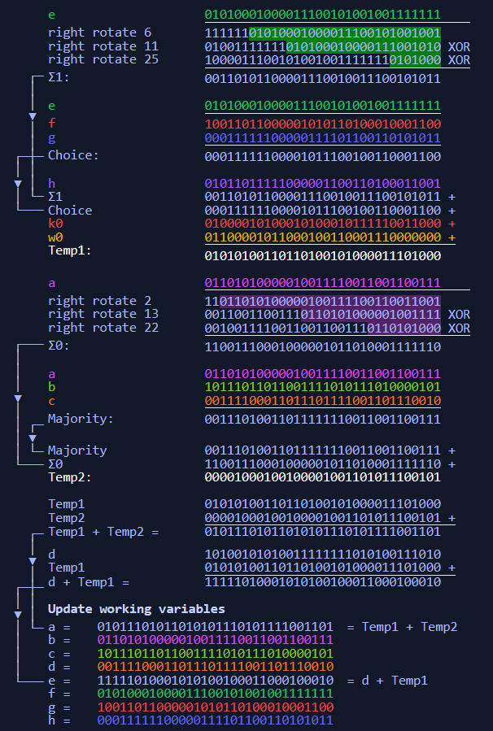
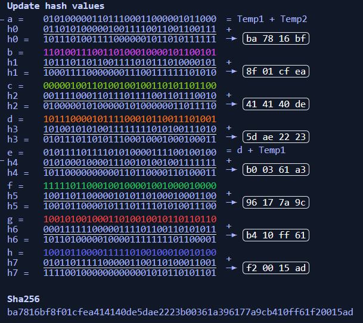

sha256
最近学长出了道sha256的密码题，顺便了解了一下sha256的实现原理:
推荐结合这个网站进行学习
参考资料
https://blog.csdn.net/u011583927/article/details/80905740
https://nvlpubs.nist.gov/nistpubs/FIPS/NIST.FIPS.180-4.pdf
对消息进行填充,例如对于abc来说，先转成二进制，再在后面加1:
01100001 01100010 01100011 10000000 <-这是添加的1
|
然后再在后面加0，直到长度模512为448(此时还剩64位未填充)
01100001 01100010 01100011 10000000►
00000000 00000000 00000000 00000000►
00000000 00000000 00000000 00000000►
00000000 00000000 00000000 00000000►
00000000 00000000 00000000 00000000►
00000000 00000000 00000000 00000000►
00000000 00000000 00000000 00000000►
00000000 00000000 00000000 00000000►
00000000 00000000 00000000 00000000►
00000000 00000000 00000000 00000000►
00000000 00000000 00000000 00000000►
00000000 00000000 00000000 00000000►
00000000 00000000 00000000 00000000►
00000000 00000000 00000000 00000000►
|
然后后面64位存的就是消息的长度,24转换成二进制就是11000
01100001 01100010 01100011 10000000►
00000000 00000000 00000000 00000000►
00000000 00000000 00000000 00000000►
00000000 00000000 00000000 00000000►
00000000 00000000 00000000 00000000►
00000000 00000000 00000000 00000000►
00000000 00000000 00000000 00000000►
00000000 00000000 00000000 00000000►
00000000 00000000 00000000 00000000►
00000000 00000000 00000000 00000000►
00000000 00000000 00000000 00000000►
00000000 00000000 00000000 00000000►
00000000 00000000 00000000 00000000►
00000000 00000000 00000000 00000000►
00000000 00000000 00000000 00000000►
00000000 00000000 00000000 00011000►
|
然后再进行填充，构造64个字

σ0 意思是右旋(右旋的意思就是把最右边的数移到左边开头)13位的值异或右旋18位的值再异或右移3位的值
σ1 意思是右旋17位的值异或右旋19位的值再异或右移10位的值
最后把这几个值加起来
从t=16开始
t=16:

t=17:

最后直到生成了64个字结束

记作M表
填充部分就此结束
下面才是真正的大戏开演
在此之前，先请演员上场
首先生成八个常量,也就是后面用于初始化变量的hash值

这八个常量是自然数中前8个质数（2,3,5,7,11,13,17,19）的平方根的小数部分取前32bit而来
之后又整群众演员，64个常量，对自然数中前64个质数的立方根的小数部分取前32bit得来

(一共64个，太多了，放不下)记作K表
前置条件准备好了，好戏开演，为我歌颂
首先有8个变量a,b,c,d,e,f,g,h
将之前生成的八个常量hash值赋给这8个变量

然后加密方法如下:

整个例子

按照这种加密方法不断更新a,b,c,d,e,f,g,h的值
直到遍历完K表和M表
最后将a,b,c,d,e,f,g,h中的值和八个初始的hash值相加得到最后加密后的值

Hash Length Extension Attacks